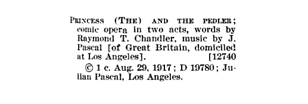
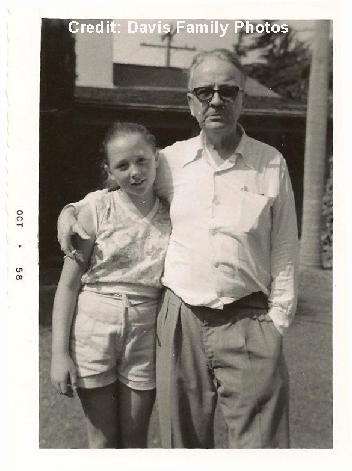
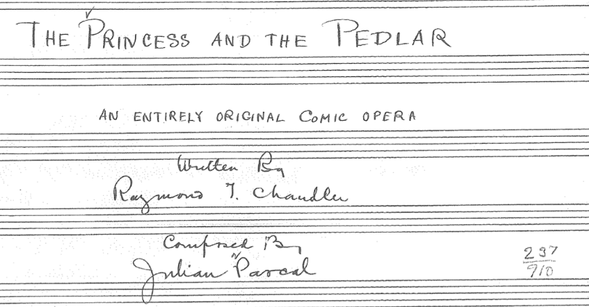

Part One: The Discovery
As a teenager, I had a recurring dream of flipping through the bins in a basement record shop and finding unreleased albums by favorite artists.
These weren’t bootlegs, but fully realized, professional productions that were comparable or even superior to the musicians’ best work. Sometimes, the clerk would be playing one while I shopped, and I’d wake up feeling the thrill of discovering great new music, while maddeningly not retaining a single hook.
I had a similar sensation on March 14 of this year, as I stared at my computer screen and re-read what was glowing there.
It wasn’t anything more than a library catalogue entry, seven bone-dry lines. But those lines were packed with significance and wonder for any dedicated fan of Raymond Chandler.

The Princess and the Pedlar appeared to be a completely unknown, unproduced and unpublished musical comedy, co-written by the 29-year-old Raymond Chandler, and filed with the Library of Congress the same summer that Chandler and Gordon Pascal (his close friend and the son of his co-author Julian Pascal) had enlisted in the Canadian Expeditionary Force.
That such a work existed ran completely contrary to the established narrative of Raymond Chandler’s midlife creative blossoming.
According to all his biographers, the young Chandler had failed to find a niche as a Bloomsbury critic and poet, and left such pretenses behind when he borrowed the price of passage to America in 1912. The next two decades of his life were given over to the world of business, rising to the position of oil company vice president before he was fired, for absenteeism and alcoholism, during the Great Depression. It was only then, hungry and with little to lose, that he had studied the short stories of Erle Stanley Gardner, determined that there was a formula to crime fiction, and reinvented himself as a writer of populist pulp.
The Princess and the Pedlar, written in Los Angeles circa 1917, changed everything. It meant that Chandler hadn’t left his literary ambitions behind in London, but had refined and expanded upon them, teaming up in Los Angeles with an accomplished composer to work in a highly commercial genre.

Then there was the not insignificant matter of his co-author Julian Pascal being the husband of Pearl Eugenie “Cissy” Hurlburt, the woman Chandler would marry in 1924.
The thought of both Cissy’s current and future husband leaning together over the piano bench to perfect a bit of music boggled the mind. It also suggested a very personal reason that The Princess and the Pedlar might have been unceremoniously mothballed and omitted from the stories Chandler told about himself. The biographers all said that it was only in 1919, on returning to Los Angeles after the war, that Chandler revealed his love for Cissy Pascal and convinced her to leave her husband. But what if something happened between them in 1917–something so serious that Chandler’s response was to leave the country?
I knew I was awake, but I pinched myself anyway.
Part Two: Sharing Secrets
The whole afternoon had been strange. Six weeks earlier, I’d launched an imprint and published The Kept Girl, my first novel, based on the Great Eleven cult fraud sensation of 1929. The promotional and distribution pressures were easing, and I was thinking about new adventures I might spin for the book’s real-life Los Angeles characters: the young Raymond Chandler and his wife Cissy, their cultured friends in the Warren Lloyd circle, the muckraking cop Tom James, mystic lecturer Manly P. Hall and Cissy Chandler’s former husband, the composer and piano teacher Julian Pascal.

My imagination was churning, half in jazz age Los Angeles, half in my novelist’s sandbox, when the inspiration came to perform the deep web search that immediately returned the astonishing result.
I sent an email to my husband Richard Schave, himself a Chandler scholar, teasing “I know something you don’t know,” then showed him what I’d found when he returned from the post office. He was as intrigued and excited as I was, and agreed to help ferret out the truth of this literary mystery.
The following Friday, Richard formally requested that the Library of Congress conduct an internal search for the work, which was recorded as having been received in August of 1917, but which appeared nowhere in the library’s searchable catalog.
That Sunday, Richard and I had been invited to the home of Sybil Anne Davis, to toast my book, which she had supported with a Subscription.
We first met Sybil on Valentines Day 2011, on the occasion of the placement of Cissy Chandler’s ashes in her husband’s grave, a legal action spearheaded by Chandler scholar Loren Latker. Sybil’s interest in the event was not casual. Her mother, Jean Fracasse, had been Raymond Chandler’s last secretary and his dear friend, and she and Sybil had selected his gravestone and buried him in Mount Hope Cemetery in 1959.

Credit: Davis Family Photos
We were fascinated to hear Sybil’s stories of growing up with the writer. The Raymond Chandler she remembered was very different from the broken widower portrayed in the biographies. Yes, he was old and infirm and having a hard time finishing a book, but he was charming and gay, and so very kind. He came alive in her recollections, and informed the character I crafted in my book.
And so it was that we came to her pretty hillside house, and in good time I asked the burning question, “Have you ever heard of something called The Princess and the Pedlar?” And if she was surprised, she didn’t show it. “Yes, of course. It’s in my file cabinet.”
It was a fairy tale, she said, and it was wonderful. Chandler had given her the libretto when she was a young girl. She’d been planning on debuting it in her memoir, a work in progress, and seemed bemused that I had prematurely sleuthed out its existence. She sent us on our way with the promise to let her know what the Library of Congress had to say.
Click HERE to read Sybil Anne Davis’ thoughts on The Princess and The Pedlar.
Part Three: The Arrival
Later that week, we heard from the Library of Congress that the work had indeed been found—and not just the libretto, but Julian Pascal’s score as well! An order for digital scanning was submitted, and we held our breaths.
We had been warned that the librarians needed to review the status of the work, and that should they determine that it was in copyright, it would be necessary to seek the permission of the Raymond Chandler Estate before our request could be fulfilled. But the scanning order was quickly processed, and on April 3, The Princess and the Pedlar arrived as a PDF attachment by email. I printed it out, and hunkered down to read the typewritten, heavily pencil-marked libretto.

I cannot read music, but it didn’t matter. The music was in the lyrics, witty staccato runs and couplets. It was instantly compelling, and demanded to be read out loud.
So I did, sending the long suppressed words out into the Los Angeles night, and Richard’s ears, almost a hundred years after they were written.
As Sybil had said, it was a fantasy, set in the royal palace of Arcadia, where refined fairy folk who have left the woods reside. The Princess Porphyria has been bewitched, and will be transformed into a golden apple if she is not married by midnight. Beautiful Jim, a shabby pedlar (English spelling) of unusual antiquities, arrives and confides in Porphyria that he seeks her hand. She thinks he’s cute, but obviously delusional if he’s interested in the girl nobody wants to marry. Still, if he insists, he should talk to her father, the King.
Thus begins a charming and sometimes laugh-out-loud musical comedy that uses the conventions of fairy tale lore to explore the mysteries of modern romance. Beautiful Jim, like Chandler himself, finds himself financially embarrassed among the cultured, sometimes inhibited upper crust. That doesn’t stop either of them from falling in love.
But there are obstacles in the way, ghastly and hilarious. Mandragora is an enchantress and Gorboyne her hideous goblin child. He desires the princess, so mama has cast two spells: the golden apple one, and a secret spell to keep eligible bachelors away. The duo caper and sing about how delicious it is to be evil.
Gorboyne: There is great satisfaction in being thoroughly wicked. It relieves one of so many responsibilities. How lucky I am that my mother is a witch!
Mandragora: Indeed you are. You never ran any risk of turning out well in my hands. Did I ever spoil you?… Did I ever do one thing to make you respectable? No, and I have my reward… There is not in Arcadia a more ill-favoured or ill-mannered little brute than you are.
Gorboyne: How can I ever reward you for your loving care?
Mandragora: By going on as you have done in the past, my child, and if possible increasing your already considerable claims to universal execration.
Gorboyne: I’ll do my worse. No one can do more.
Duet: Criminals both without disguise, Steeped in crime to the hair and eyes, Barred forever from paradise, Fearfully bad are we
Soon, the King and Queen of Arcadia weigh and reject the ardent Jim as a mate for their well-bred daughter. Two other suitors, despite noble birth, are rejected on financial grounds. In all the excitement, the princess falls in love with Jim. He disguises himself and again approaches her parents, but is unmasked by Mandragora and Gorboyne. The clock strikes twelve, the lovers are separated, and the goblin claims his bride.
That’s Act One. In Act Two, varying modern philosophies of love are aired against the backdrop of Jim’s quest for the princess, now enchanted within a forest glade. Then come danger and arguments, magical spells both white and black, threats of torture and execution, even a little amateur detective work.
One incantation, entitled “Pour O Pour The Goblin Wine,” is particularly delicious:
Tenors: Humming-birds with sauce of dew, Glow-worm salad, spider stew Butterflies both red and blue Frizzled in the pan; Dandelions naturel, Fricassee of asphodel, Greenheart acorns in the shell, Apple-bugs in bran.
Bassos: Queen-bee cutlets hollandaise, Fresh young flying-ants with maize, Earthworms à la Père Lachaise, Pickled eye of toad; Fancy sea-foam charlotte-russe, Night-mist cocktails, tea of spruce, Cafè noir grasshopper juice Cobwebs à la mode.
But love triumphs at last, and Mandragora and Gorboyne resolve to give up their lives of crime, in verses that will particularly delight a reader of Chandler’s later fiction.
Gorboyne: Intestinal colic, ugh!
Mandragora: Acute lumbago. How disgusting!
Gorboyne: Tuberculosis,–and he’d do it, too. These foreigners are capable of anything.
Mandragora: And cerebral meningitis, that’s the last straw. I never could stand that at my time of life.
Gorboyne: Nor I. Mother, things are looking bad for us.
Mandragora: Very bad, my child. I almost begin to think that a life of crime doesn’t pay.
Gorboyne: And yet there is a fascination about it. One can’t deny there is a fascination about it. But there is no fascination about cerebral meningitis.
Mandragora: None whatever. Let’s reform.
Yes, The Princess and the Pedlar was real–and it was good. Richard and I looked at each other and wondered what on earth we ought to do about it.
Part Four: Let’s Put On A Show
The Princess and the Pedlar was obviously a major literary discovery. But how best to reveal it to the world?
We could make it the topic of a LAVA Sunday Salon Talk at our monthly cultural lecture series, to coincide with one of our occasional Raymond Chandler bus tours. And we could blog about it on our website, where we’d featured small Chandler discoveries in the past. If we did all this, accompanied by a press release, it would certainly get the word out in Los Angeles and beyond.
But was it enough simply to announce that a copy of Raymond Chandler’s secret operetta had been discovered in the Library of Congress? It didn’t seem like it, somehow.
What if instead of telling everybody about The Princess and the Pedlar, we showed them, instead? What was stopping us from producing the show in Los Angeles, 90-some years after the project was abandoned?
So we reached out to our friend Paul Sand, the wonderful comic actor, dancer, singer and director whose excellent Brecht-Weill review we’d recently seen staged in a noirish space at the end of the Santa Monica pier. Was he a Chandler fan? Could he keep a secret? Yes, yes and (after reading the libretto) yes, he’d be most interested in staging The Princess and the Pedlar in its world premiere.
Click HERE to read Paul Sand’s thoughts on The Princess and The Pedlar.
Next, we approached Skip Heller, the multi-talented musical director, guitarist, composer, historian and bandleader. He too was a Chandler fan who could be discrete. And boy, would he ever like to work on The Princess and the Pedlar!
Click HERE to read Skip Heller’s thoughts on The Princess and The Pedlar.
With Paul and Skip on board and ideas flying, we felt enormously excited about the possibilities. But before we could ask our talented friends to devote any concerted energy to The Princess and the Pedlar, we had to know: what was the legal status of the property?
To answer this question, we consulted an attorney whose expertise is intellectual property and copyright. He too was a Chandler fan who could keep a secret, and he found ours to be a very interesting legal problem.
Copyright law is complicated, and it varies from one country to another. We were asking about a work that had been copyrighted in 1917 in the United States, created by a British composer who had died in 1928 and an American librettist who had died in 1959.
If the work had been published in 1917, or any time before 1923, it would fall clearly in the public domain. But it hadn’t been published. The music was in the public domain, because Pascal died so long ago. Chandler’s libretto, on the other hand, could very well be in the public domain—the staff of the Library of Congress apparently thought so, or they wouldn’t have sent us the scan–but as an unpublished work, its status was inherently uncertain.
In other words, we could gamble that the operetta was in the public domain, but the Raymond Chandler Estate could claim otherwise.
There was only one thing to do: we wrote to the Raymond Chandler Estate, informed them that we’d discovered an unknown work by the author, and requested their permission to stage a workshop run of the •The Princess and the Pedlar* in Los Angeles.
The initial response was an understandable expression of disbelief. So we sent a copy of the libretto, and instructions for locating the original in the Library of Congress, and explained that Sybil Anne Davis, Jean Fracasse’s daughter, had received a copy directly from Chandler in the late 1950s. A few weeks later came this response:
From: Ed Victor
Date: Thu, Oct 16, 2014
Subject: Chandler libretto
I have discussed your proposal about the Chandler libretto very carefully with Graham Greene, and I’m afraid we have decided not to give you permission to workshop the opera or publish it in any way. It is a very early work, and not representative of Chandler’s oeuvre. Yes, it is of course a curiosity, but we feel no more than that. As such, we would rather not allow it to be promoted. Sorry!
Best Ed Victor
Part Five: Raymond Chandler Fans Unite
Naturally, we were disappointed that the Raymond Chandler Estate didn’t want The Princess and the Pedlar to be staged in Los Angeles. But at least they acknowledge that it is by Chandler’s hand. If nothing else, this extraordinary literary discovery is now officially recognized as the author’s work.
However, we strongly disagree with the assessment of the libretto as “no more than… a curiosity.” We are enormously impressed by the literary quality of The Princess and the Pedlar, and are certain that it has the potential to delight, inspire and amuse an audience, be it on the stage or on the page. Two renowned performing artists, Paul Sand and Skip Heller, agree, and are prepared to do the hard work necessary to turn a 97-year-old document into a contemporary theatrical production. We, in turn, are prepared to raise the funds to produce that show.
But we need your help.
Please sign the petition (click hererespectfully asking the Raymond Chandler Estate to reconsider their decision not to grant permission for us to stage The Princess and the Pedlar. We hope when his representatives see how interested Raymond Chandler’s fans are in this lost work, that they will be willing to give us the chance to finally bring it to life here in Los Angeles, where it was crafted and abandoned, nearly a century ago.
In Conclusion
I cannot tell you why it is that I should have discovered a lost work that has eluded Raymond Chandler’s myriad editors, agents, biographers and fans. All I can think is that after spending so many years immersed in Chandler’s world while researching and writing my novel, that sympathetic frequencies vibrated between us. Or perhaps it was simply the right time for the secret to escape. Now that it has, I feel an enormous responsibility to do right by the writer and composer of The Princess and the Pedlar. So if it is possible to stage this show, I shall.
We may never know for certain what caused Julian Pascal and Raymond Chandler to walk away from a project that represented many months of dedicated labor, though the uncorrected edits on the libretto suggest that the project was abandoned in haste. Cissy Chandler’s letters, which might have revealed the answer, were burned by her husband after her death.
Forty years after it was written, Chandler deliberately withheld what he may have believed was the only surviving copy of The Princess and the Pedlar from the librarians of the University of California at a time when they were eagerly collecting his manuscripts and correspondence for the Special Collections archive.
My feeling is that the dog-eared copy of the libretto to The Princess and the Pedlar that is in Sybil Anne Davis’ possession belonged to Cissy Pascal. She kept it when her husband filed the work with the Library of Congress, and when its author sailed to France to fight. She took it with her when she left Julian Pascal’s house, and when she married Chandler. When she died, Chandler was one of the last people alive who still knew the secret of The Princess and the Pedlar. And so he shared it with a young girl who adored him.
Sixty years later, she still does.